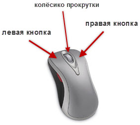
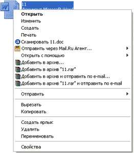
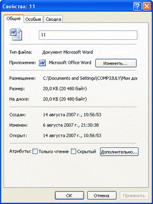
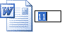
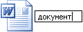
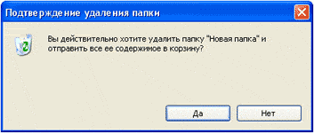

Как изменить файл и папку
Сейчас мы научимся изменять файлы и папки с файлами: менять их название и удалять. Делается это при помощи контекстного меню Windows. Чтобы его открыть, нужно нажать на правую кнопку мышки.
Правая кнопка мыши нужна нам для того, чтобы давать компьютеру различные команды. Проще говоря, для того, чтобы с ним разговаривать. Пока современные компьютеры не понимают человеческого голоса. А общаться нам с ним придется довольно часто :)
Левой кнопкой мы открываем, выделяем, можем передвинуть объект в другое место. А правая нужна для того, чтобы «говорить» компьютеру, чего мы от него хотим. Называется она контекстное меню.
Попробуйте щелкнуть правой кнопкой по какому-нибудь значку. Откроется список различных команд для компьютера. Это и есть меню. Пощелкайте правой по разным объектам (по «Пуск», по пустому месту, по значкам). Практически всегда появляется это окошко с командами.
Когда Вы кликаете по папке, появляется список тех действий, которые можно совершить с этой папкой. А когда на пустом месте (свободной части), появляется список действий, которые можно совершить над этим местом. Если Вы щёлкаете правой по «Пуск», появляется список того, что можно сделать с «Пуск». И так далее, и тому подобное.
На заметку. Если Вы хотите что-то сделать, но не знаете, как, попробуйте открыть контекстное меню этого места. Скорее всего, там будет нужный пункт.
Контекстное меню Windows
Откройте «Локальный диск D» или «Документы». Щелкните правой кнопкой мыши по любому файлу или папке (у них практически одинаковые менюшки). Должен открыться список команд для компьютера – контекстное меню.
Многие его пункты нам не понадобятся. Рассмотрим те из них, которые действительно нужны в работе. Начнем с последней строки «Свойства».
Свойства — показывает информацию об объекте. Если Вы выберите этот пункт, появится окошко с данными. И в нем есть несколько закладок (наверху). Среди них нам понадобится только закладка «Общие». В ней можно узнать размер файла или папки, размещение, дату создания, в общем, получить характеристику.
Следующая строка меню, которая нам понадобится в работе, называется Переименовать (второй снизу).
Этот пункт контекстного меню используется для того, чтобы изменить название файла или папки. Если Вы нажмете на «Переименовать», то название закрасится каким-нибудь цветом (синим или серым, или еще каким-нибудь).
Это означает, что уже можно печатать новое название. Проверьте, правильный ли указан язык (внизу справа).
Если алфавит не тот, который нужен, нажмите на него и выберите другой. Сразу после этого, никуда больше не нажимая, напечатайте новое название для объекта.
Следующий нужный пункт:
Удалить — стереть файл или папку из компьютера. Если Вы выбрали этот пункт, то появится небольшое окошко, при помощи которого компьютер спрашивает, на самом ли деле Вы хотите удалить объект. Если уверены, что хотите его стереть, нажимайте «Да». Если не собираетесь этого делать, то «Нет».
На этом нужные пункты меню не заканчиваются. Есть еще один очень важный и нужный пункт, которым мы будем часто пользоваться. Но об этом Вы узнаете из урока «Копирование».
Вывод: для того, чтобы изменить файл или папку, следует щёлкнуть по ней правой кнопкой мышки.